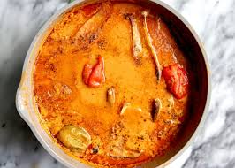

Home
GROUNDNUT SOUP

Description
Ghanaian groundnut soup is a soup made of peanut butter and some protein of choice mainly chicken, beef, goat
meat, or combination of all.
Usually paired with fufu, banku or rice ball.
Ingredients
- Tomato paste
- Raw tomato
- Onions
- Habanero
- Garlic
- Ginger
- Peanut butter
- Chicken/Beef/Goat meat
- Steps
- Mix tomato paste, peanut butter, water and cook until the mixture begins to solidify
- Steam your Proteins
- Blend your vegetables and add to your proteins
- Cook for 15 minutes to 20 minutes
- Add peanut butter mixture to the proteins
- Add half a cup of water
- Cook extra 25 minutes
Voila!!! you have a rich groundnut soup